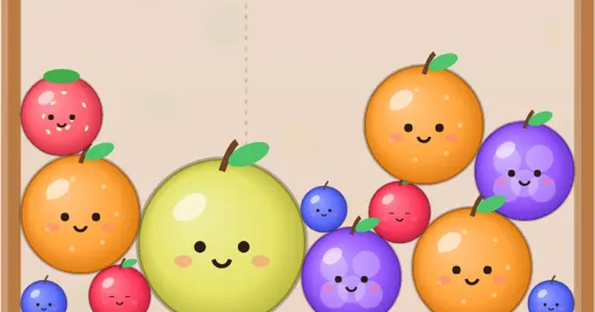

과일 합치기
Fruit Merge
퍼즐 · 물리무료설치 없음폰 · PC
▶ 지금 바로 하기로그인 없이 브라우저에서 바로 시작돼요
어떤 게임인가요?
과일을 떨어뜨려 같은 과일끼리 닿게 하면 한 단계 큰 과일로 변해요. 블루베리에서 수박까지! 상자 위 선을 넘으면 끝.
목표 · 같은 과일을 합쳐 점점 큰 과일을 만들고, 상자가 넘치기 전까지 최대한 높은 점수를 노리세요.
이렇게도 찾아요
과일 게임합치기 게임과일 떨어뜨리기물리 퍼즐fruit mergemerge gamefruit drop puzzle
#과일합치기 #합치기게임 #퍼즐게임 #시간순삭
게임 방법
- 화면을 좌우로 끌어 떨어뜨릴 위치를 정하고, 손을 떼면 과일이 떨어져요.
- 같은 과일 두 개가 닿으면 합쳐져 한 단계 큰 과일이 돼요: 블루베리 → 체리 → 딸기 → 포도 → 귤 → 사과 → 배 → 복숭아 → 파인애플 → 멜론 → 수박.
- 클수록 점수가 많고, 연달아 합치면 콤보 보너스.
- 과일이 위쪽 빨간 점선을 넘은 채로 잠깐 멈춰 있으면 끝.
- 수박 두 개를 합치면 둘 다 사라지며 큰 보너스!
등장하는 것들
- 블루베리 · 가장 작은 과일
- 귤 · 중간 크기
- 수박 · 가장 큰 과일 · 둘을 합치면 보너스
- 빨간 점선 · 넘치면 끝
공략 팁
- 큰 과일은 한쪽 구석에 모으세요.
- 작은 과일이 큰 과일 사이에 끼지 않게 조심.
- 다음 과일을 보고 미리 자리를 비워 두세요.
이런 게임도 있어요
 2048퍼즐 · 숫자
2048퍼즐 · 숫자 색실 잇기잇기 퍼즐 · 수집
색실 잇기잇기 퍼즐 · 수집 윷놀이전통 놀이 · 1P/2P
윷놀이전통 놀이 · 1P/2P 방울 터뜨리기퍼즐 · 조준
방울 터뜨리기퍼즐 · 조준 사과 10 만들기퍼즐 · 두뇌 · 2분
사과 10 만들기퍼즐 · 두뇌 · 2분 타자 게임 · 낱말 비타자 연습 · 키보드
타자 게임 · 낱말 비타자 연습 · 키보드